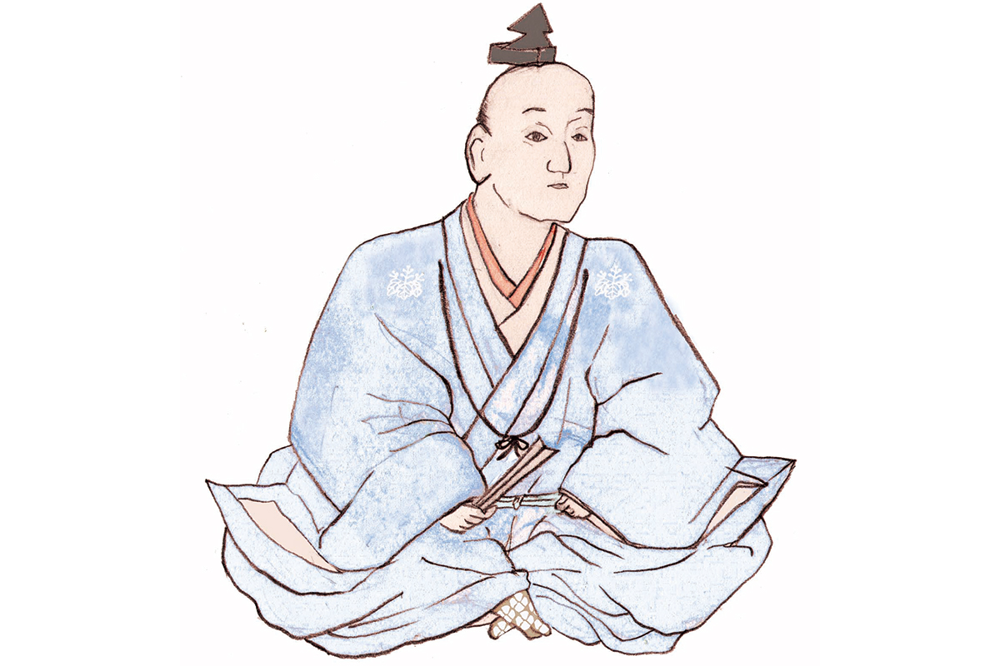

Префектура Айти · Ама · исторические личности
Масакацу Хатисука: правая рука Хидэёси и, по слухам, главарь ночных разбойников

Он был рядом с Хидэёси Тоётоми с тех времён, когда будущий объединитель Японии был никому не известен, и до конца жизни оставался его ближайшим помощником. По одной из версий, в молодости Масакацу Хатисука водил шайку ночных разбойников.
Эпоха
Век воюющих провинций
С конца XV до конца XVI века Япония жила в непрерывной войне. Сёгунат Муромати окончательно потерял власть, и на месте прежних наместников по всей стране поднялись новые владетельные князья, даймё. Эту эпоху называют периодом Сэнгоку, временем воюющих провинций, и её полководцы до сих пор остаются героями легенд, книг и фильмов.
Один из них Масакацу Хатисука (1526–1586). Он родился в провинции Овари, на западе нынешней префектуры Айти, в роду Хатисука, который взял имя от своей деревни. За жизнь он сменил несколько имён: Короку, затем Хикоэмон и, наконец, Масакацу. В историю он вошёл прежде всего как Короку Хатисука. Его законную жену звали Мацу, позднее она приняла имя Дайсё-ин.
Рядом с Хидэёси
Друг безымянных лет
Короку был правой рукой Хидэёси Тоётоми (1537–1598), крестьянского сына, который поднялся до правителя всей Японии. Они держались вместе ещё в те годы, когда у Хидэёси не было ни имени, ни войска, и, говорят, даже жили под одной крышей.
О том, как они встретились, рассказывают по-разному. По одной версии, Хидэёси, бродивший тогда без хозяина, и Масакацу столкнулись на мосту Яхаги. По другой, отец Хидэёси служил у Масатоси Хатисуки, отца Масакацу, и знакомство сыновей выросло из этой старой связи. А ещё говорят, что Масакацу в то время был главарём ночных разбойников.
Около 1566 года Хидэёси вызвался за одну ночь поставить крепость в Суномате, в соседней провинции Мино, и Масакацу помог довести стройку до конца. Потом были походы на запад страны, осада замка Биттю-Такамацу, битва при Комаки и Нагакутэ и многие другие сражения. Своим стремительным взлётом Хидэёси во многом обязан именно Масакацу.
Позже ему предложили целую провинцию Ава на острове Сикоку, но он отказался. Масакацу поселился в призамковом городе Осаки и там умер. Он выбрал до конца жизни оставаться рядом с Хидэёси, а не править собственными землями.
Легенда
Встреча на мосту Яхаги
Мост Яхаги в городе Окадзаки, на востоке префектуры Айти, считается местом знакомства Хидэёси и Масакацу. Легенда такая: Хидэёси прилёг вздремнуть у самого моста, а Масакацу, тогда ещё мальчишка, нечаянно на него наступил. С этого и началась их дружба. В память о встрече у моста поставили статуи обоих, но к 2021 году их перенесли в другое место из-за перестройки моста.
Хроника
Жизнь Масакацу Хатисуки
1526. Родился в провинции Овари.
Около 1566. Помог Хидэёси построить крепость Суномата в провинции Мино. Её прозвали «крепостью одной ночи».
1573. После гибели рода Адзаи Хидэёси стал хозяином замка Нагахама в провинции Оми, и Масакацу получил земли в его владениях.
1581. За многие заслуги стал хозяином замка Тацуно в провинции Харима.
1582. Вместе с Камбэем Куродой (1546–1604), военным советником Хидэёси, добился сдачи замка Такамацу. Это помогло армии Хидэёси совершить знаменитый быстрый бросок с запада обратно к столице.
1584. Участвовал в битве при Комаки и Нагакутэ.
1585. Императорский двор пожаловал ему младший четвёртый ранг и придворную должность. В походе на Сикоку он взял замок Кидзу в провинции Ава.
1586. Умер в Осаке.
Где увидеть
Родина Короку в городе Ама
Деревня, давшая роду имя, сохранилась как район Хатисука в городе Ама, к западу от Нагои. Здесь стоял замок Хатисука, где, по преданию, и родился Масакацу. От замка ничего не осталось, но память о нём хранит старый храм Рэнгэ-дзи.
Храм школы Сингон, по преданию, основал монах Кукай (774–835), и в округе его зовут просто «Хатисука Кобо». Это семейный храм рода Хатисука, где почитают память Масакацу и его сына Иэмасы. К югу от храма стоят два камня: памятный камень в честь Масакацу и камень с надписью «Руины замка Хатисука». Вокруг храма сохранился старый лес площадью около 2,2 гектара: он стал первой охраняемой природной территорией префектуры Айти и особенно хорош в апреле и мае, в свежей зелени, и в ноябре, когда краснеют клёны.
Каждый год в третье воскресенье апреля в Рэнгэ-дзи проходит шествие двадцати пяти бодхисаттв: местные жители в облачении бодхисаттв идут по храму, и, по поверью, если такой бодхисаттва погладит тебя по голове, беды обойдут стороной. В этот день танцуют и Ава-одори, ведь потомки Масакацу правили провинцией Ава. К 500-летию со дня рождения Масакацу в 2026 году город устроил выставку о нём и о других полководцах из этих мест (с 1 октября по 20 декабря 2026 года, в двух городских историко-этнографических музеях) и прогулки с волонтёрами по местам Короку вокруг храма.
Храм Рэнгэ-дзи
- Адрес
- префектура Айти, Ама, Хатисука, 1352
- Телефон
- +81 52-444-1272
- Часы работы
- о посещении нужно заранее договориться по телефону
- Как добраться
- от станции Аоцука линии Мэйтэцу Цусима около 10 минут пешком на север
- Сайт
- ama-kankou.jp
Фото: Мария Араи (иллюстрация).